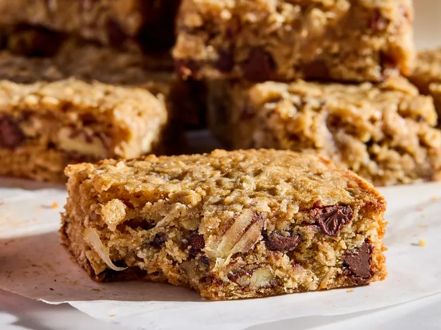

Cowboy Cookie Bars
These cowboy cookie bars are perfectly balanced and tasty. The addition of shredded coconut make them extra moist.

Ingredients
- 1 cup all purpose flour
- 1 teaspoon salt
- 1/2 teaspoon ground cinnamon
- 1/4 teaspoon baking powder
- 1 cup packed light brown sugar
- 1/2 cup unsalted butter, melted
- 2 large eggs
- 3/4 cup rolled oats
- 1/2 cup shredded coconut
- 1/2 cup semi-sweet chocolate chips
- 1/2 cup chopped pecans
Steps
-
Gather all ingredients. Preheat the oven to 350 degrees F (175 degrees C). Line an 8x8-inch baking pan with parchment paper.
-
Mix together flour, salt, cinnamon, and baking powder in a large bowl; set aside.
-
Whisk together brown sugar, melted butter, eggs, and vanilla in a medium bowl. Add to flour mixture and stir until moistened.
-
Add oats, coconut, chocolate chips, and pecans to the dough. Fold with a spatula until well combined. The mixture will be thick.
-
Transfer dough to the prepared baking pan and spread out evenly. Bake until the bars are golden brown and set on the edges, 25 to 30 minutes.
-
Transfer pan to a wire rack and cool in the pan. Cut into 12 portions.
Back to home page